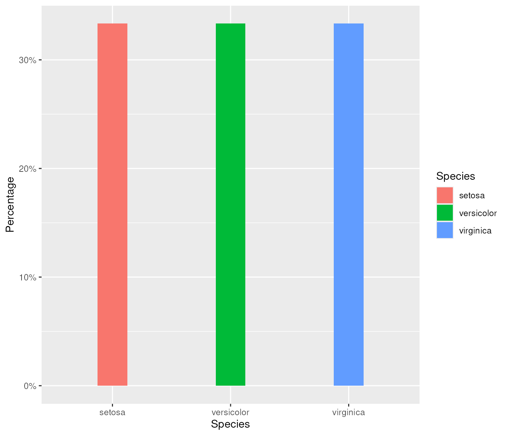
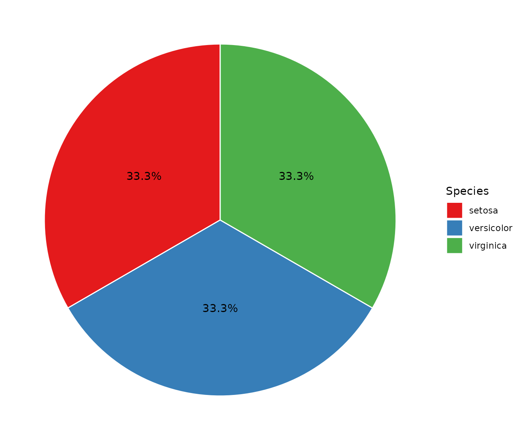

Let’s start by loading the phsmethods package.
Motivation
Working with percentages in R can be frustrating, to say the least. A typical workflow for generating percentages might look like this:
- Generate proportions
- Scale up proportions to percentages (multiplying by 100)
- Round percentages
- Convert percentages to characters
- Append a percentage symbol
- Use proportions for math operations and rounding
- Use formatted percentage strings for outputs
With <percent> vectors, this workflow is reduced
to:
- Generate proportions
- Convert to percentages
This is clearly much simpler and allows for cleaner and more reproducible code.
Creating percentages
The primary function for converting to percentages is
as_percent(). This converts a <numeric>
vector to a <percent> vector, handling the formatting
and rounding when needed, i.e printing or converting to a character
vector.
(p <- as_percent(0.055))
#> [1] "5.5%"Internally, the numeric vector is left as-is, which can be confirmed
by examining the vector via unclass(x).
unclass(p)
#> [1] 0.055
#> attr(,".digits")
#> [1] 2The only time percentage formatting actually happens is when the
<percent> vector is printed or converted to a
character vector (via as.character or
format).
print(p)
#> [1] "5.5%"
as.character(p)
#> [1] "5.5%"
format(p)
#> [1] "5.5%"Rounding
Percentages are rounded using a round-halves-up approach. The rationale for straying away from R’s round-to-even is that readers generally expect percentages to be rounded this way in formatted outputs such as papers, reports, etc. We are less concerned with statistical bias and more concerned with formatting.
There are two main ways to control how percent vectors are rounded:
Rounding via as_percent + digits
as_percent does two things:
- It creates a
<percent>vector - It sets the “.digits” attribute, which controls how the percent vector is printed downstream.
p2 <- as_percent(p, digits = 0)
# Prints and formats to 0 decimal places
print(p2)
#> [1] "6%"
as.character(p2)
#> [1] "6%"
# Underlying data has not been rounded!
unclass(p2)
#> [1] 0.055
#> attr(,".digits")
#> [1] 0Rounding via round()
This method will ‘physically’ round the numbers.
p3 <- round(p, digits = 0)
p3
#> [1] "6%"
# Underlying data has been rounded
unclass(p3)
#> [1] 0.06
#> attr(,".digits")
#> [1] 2In practice, this means that rounding with as_percent is
more flexible as it reduces downstream errors that can accumulate from
premature rounding.
Math with percent vectors
A strong feature of <percent> vectors is the
ability to use them in mathematical contexts without extra unnecessary
work.
# Helper to create literal percentages
percent <- function(x) {
as_percent(x / 100)
}Addition, subtraction, multiplication and division.
percent(50) + percent(25) # = 50% + 25% = 75%
#> [1] "75%"
percent(50) - percent(25) # = 50% - 25% = 25%
#> [1] "25%"
percent(50) * percent(25) # = 50% * (1/4) = 12.5%
#> [1] "12.5%"
percent(50) / percent(25) # = 50% / (1/4) = 200%
#> [1] "200%"More rounding functions.
percentages <- percent(seq(-0.1, 0.1, by = 0.05))
floor(percentages)
#> [1] "-1%" "-1%" "0%" "0%" "0%"
ceiling(percentages)
#> [1] "0%" "0%" "0%" "1%" "1%"
trunc(percentages)
#> [1] "0%" "0%" "0%" "0%" "0%"
round(percentages)
#> [1] "0%" "0%" "0%" "0%" "0%"
round(percentages, 1)
#> [1] "-0.1%" "-0.1%" "0.0%" "0.1%" "0.1%"
round(percentages, 2)
#> [1] "-0.10%" "-0.05%" "0.00%" "0.05%" "0.10%"percent vectors and tidyverse
<percent> vectors can be used in tibbles just like
regular vectors.
library(dplyr)
#>
#> Attaching package: 'dplyr'
#> The following objects are masked from 'package:stats':
#>
#> filter, lag
#> The following objects are masked from 'package:base':
#>
#> intersect, setdiff, setequal, union
species <- starwars |>
count(species, sort = TRUE) |>
mutate(perc = as_percent(n / sum(n), digits = 1))
# Prints nicely
species |>
slice_head(n = 5)
#> # A tibble: 5 × 3
#> species n perc
#> <chr> <int> <percent>
#> 1 Human 35 40.2%
#> 2 Droid 6 6.9%
#> 3 NA 4 4.6%
#> 4 Gungan 3 3.4%
#> 5 Kaminoan 2 2.3%We can also do statistical summaries.
<percent> vectors and formatted tables
They can also be easily and nicely formatted into tables (e.g. via
kable())
| min | max | median | avg | sum |
|---|---|---|---|---|
| 1.1% | 40.2% | 1.1% | 2.6% | 100% |
And flextables.
library(flextable)
qflextable(perc_summary)min |
max |
median |
avg |
sum |
|---|---|---|---|---|
1.1% |
40.2% |
1.1% |
2.6% |
100% |
percent vectors and ggplot2
library(ggplot2)
gg_data <- iris |>
as_tibble() |>
count(Species) |>
mutate(
prop = n / sum(n),
perc = as_percent(
prop,
digits = 1 # To control formatting in ggplot + elsewhere
)
)
gg_data
#> # A tibble: 3 × 4
#> Species n prop perc
#> <fct> <int> <dbl> <percent>
#> 1 setosa 50 0.333 33.3%
#> 2 versicolor 50 0.333 33.3%
#> 3 virginica 50 0.333 33.3%
species_gg <- gg_data |>
ggplot(aes(Species)) +
geom_col(aes(y = prop, fill = Species), width = 0.25)Use as_percent for formatting percentage axes.
species_gg +
scale_y_continuous(name = "Percentage", labels = as_percent)
We can also use <percent> vectors as ggplot
aesthetics1
gg_data |>
ggplot(aes(x = "", y = perc, fill = Species)) +
geom_bar(stat = "identity", width = 1, color = "white") +
coord_polar("y", start = 0) +
theme_void() +
geom_text(aes(label = perc), position = position_stack(vjust = 0.5)) +
scale_fill_brewer(palette = "Set1")
#> Don't know how to automatically pick scale for object of type <percent>.
#> Defaulting to continuous.
#> Don't know how to automatically pick scale for object of type <percent>.
#> Defaulting to continuous.